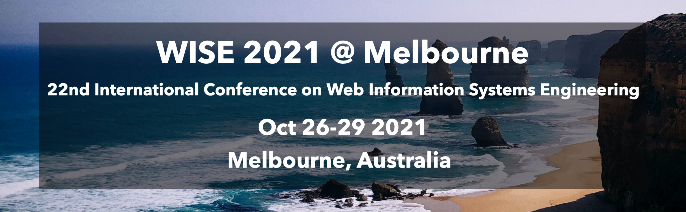

Program Committee
- Adam Wójtowicz, Poznań University of Economics and Business, Poland
- An Liu, Soochow University, China
- Armin Haller, Australian National University, Australia
- Athena Vakali, Aristotle University of Thessaloniki, Greece
- Athman Bouguettaya, The University of Sydney, Australia
- Azadeh Ghari-Neiat, Deakin University, Australia
- Barbara Catania, DIBRIS-University of Genoa, Italy
- Bernd Amann, Sorbonne University, France
- Bin Cao, Zhejiang University of Technology, China
- Bo Tang, Southern University of Science and Technology, China
- Boualem Benatallah, The University of New South Wales, Australia
- Caihua Shan, The University of Hong Kong, Hong Kong
- Chaogang Tang, China University of Mining and Technology, China
- Cheng Long, Queen's University Belfast, UK
- Chutiporn Anutariya, Asian Institute of Technology, Thailand
- Cindy Chen, University of Massachusetts Lowell, USA
- Dan Lin, Missouri University of Science and Technology, USA
- Daniela Grigori, University Paris-Dauphine, France
- Dario Colazzo, University Paris-Dauphine, France
- Dawei Jiang, Zhejiang University, China
- De Wang, Georgia Institute of Technology, USA
- Detian Zhang, Soochow University, China
- Devis Bianchini, University of Brescia, Italy
- Dickson K.W.Chiu, The University of Hong Kong, Hong Kong
- Dimitri Theodoratos, NJIT, USA
- Dimitrios Georgakopoulos, Swinburne University of Technology, Australia
- Dimitris Plexousakis, Institute of Computer Science FORTH, Greece
- Dimitris Sacharidis, University Libre De Bruxelles (ULB), Belgium
- Dingming Wu, Shenzhen University, China
- Djamal Benslimane, Lyon 1 University, France
- Eleanna Kafeza, Zayed University, UAE
- Fenglong Ma, Pennsylvania State University, USA
- Francesco Piccialli, University of Naples Federico II, Italy
- George Pallis, University of Cyprus, Cyprus
- George Papastefanatos, Information Systems Management Institute, Athena Research Center, Greece
- Georgia Kapitsaki, University of Cyprus, Cyprus
- Georgios Kambourakis, University of the Aegean, Greece
- Guanfeng Liu, Macquarie University, Australia
- Hai Dong, RMIT University, Australia
- Hao Huang, Wuhan University, China
- Hayato Yamana, Waseda University, Japan
- Heiko Schuldt, University of Basel, Switzerland
- Hong Va-Leong, The Hong Kong Polytechnic University, Hong Kong
- Hongzhi Wang, Harbin Institute of Technology, China
- Hongzhi Yin, The University of Queensland, Australia
- Hui Li, Xiamen University, China
- Jarogniew Rykowski, The Poznan University of Economics, Poland
- Ji Zhang, The University of Southern Queensland, Australia
- Jiangang Ma, Federation University, Australia
- Jianming Lv, South China University of Technology, China
- Jianming Yong, Univeristy of Southern Queensland, Australia
- Jianxin Li, Deakin University, Australia
- Jinli Cao, La Trobe University, Australia
- Junhu Wang, Griffith University, Australia
- Jyun-Yu Jiang, University of California, USA
- Kewen Liao, ACU North Sydney, Australia
- Kostas Stefanidis, Tampere University, Finland
- Kyoung-Sook Kim, National Institute of Advanced Industrial Science and Technology (AIST), Japan
- Lei Zhao, Soochow University, China
- Leong Hou-U, University of Macau, Macau
- Lihua Zhou, Yunnan University, China
- Lili Jiang, Umeå University, Sweden
- Lu Chen, Zhejiang University, China
- Man Lung-Yiu, The Hong Kong Polytechnic University, Hong Kong
- Marco Aiello, University of Stuttgart, Germany
- Md-Rafiul Hassan, King Fahd University of Petroleum and Minerals, Saudi Arabia
- Min Peng, Wuhan University, China
- Mitsunori Ogihara, University of Miami, USA
- Mohamed Reda-Bouadjenek, Deakin University, Australia
- Mohamed Sellami, ISEP Paris, France
- Mohammed Eunus-Ali, Bangladesh University of Engineering and Technology (BUET), Bangladesh
- Murali Mani, University of Michigan-Flint, USA
- Natwar Modani, Adobe Systems India Private Limited, India
- Nicoleta Preda, University of Versailles, France
- Nora Faci, Lyon 1 University, France
- Panagiotis Karras, Aarhus University, Denmark
- Peiquan Jin, Univerisity of Science and Technology of China, China
- Richard Chbeir, University of Pau, France
- Sajib Mistry, Curtin University, Australia
- Schahram Dustdar, Vienna University of Technology, Austria
- Sebastian Link, The University of Auckland, New Zealand
- Shaoxu Song, Tsinghua University, China
- Shiting Wen, Ningbo Technological Institute of Zhejing University, China
- Siqiang Luo, Nanyang Technological University, Singapore
- Sira Yongchareon, Auckland University of Technology, New Zealand
- Stefan Tai, TU Berlin, Germany
- Tanzima Hashem, Bangladesh University of Engineering and Technology, Bangladesh
- Theodoros Chondrogiannis, University of Konstan, Germany
- Tieyun Qian, Wuhan University, China
- Tobias Grubenmann, University of Bonn, Germany
- Toshiyuki Amagasa, University of Tsukuba, Japan
- Tsz Nam-Chan, Hong Kong Baptist University, Hong Kong
- Verena Kantere, University of Ottawa, Canada
- Viswanath Gunturi, IIT Ropar, India
- Wei Shen, Nankai University, China
- Xiang Lian, Kent State University, USA
- Xiangmin Zhou, RMIT University, Australia
- Xiaohui Tao, The University of Southern Queensland, Australia
- Xiaojun Chen, Shenzhen University, China
- Xiaokui Xiao, National University of Singapore, Singapore
- Xiaoye Miao, Zhejiang University, China
- Xin Cao, The University of New South Wales, Australia
- Xin Huang, Hong Kong Baptist University, Hong Kong
- Xin Wang, Tianjin University, China
- Xun Yi, RMIT University, Australia
- Yain-Whar Si, University of Macau, Macau
- Yanchun Zhang, Victoria University, Australia
- Yannis Manolopoulos, Open University of Cyprus, Cyprus
- Yi Zhuang, Zhejiang GongShang University, China
- Yixiang Fang, Chinese University of Hong Kong, China
- Yunjun Gao, Zhejiang University, China
- Binghao Li, UNSW, Australia
- Lina Yao, University of New South Wales, Australia
- Ying Zhang, UTS, Australia
- Lu Qin, UTS, Australia
- Kai Zheng, University of Electronic Science and Technology of China, China
- Dirk Van-Gucht, Indiana University, USA
- Hua Lu, Roskilde University, Denmark
- Alexandra Cristea, Durham University, UK
- Shazia Sadiq, The University of Queensland, Australia
- Jianliang Xu, Hong Kong Baptist University, HK
- Helen Zi-Huang, University of Queensland, Australia